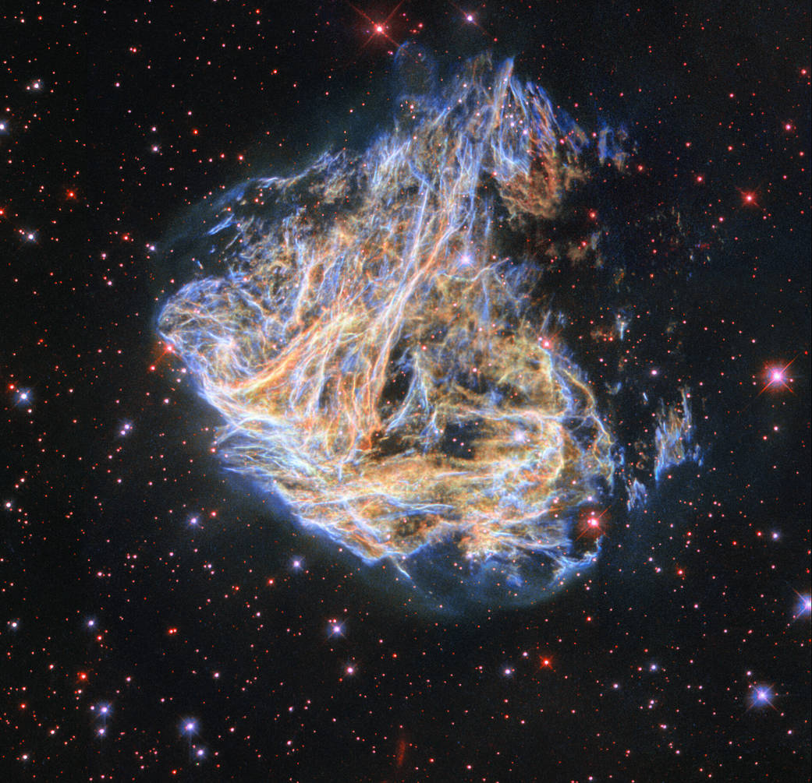

El cosmo es todo lo que es, todo lo que fue
todo lo que sera. Nuestra mas ligeras
Contemplaciones del cosmos nos hacen
estremecer. Sentimos como un cosquilleo nos
Llena los nervios, una voz muda, una ligera
sensación como de un recuerdo legano o como si
Cayeramos desde una gran altura. Sabemos que nos
aproximamos al mas grande de los misterios
